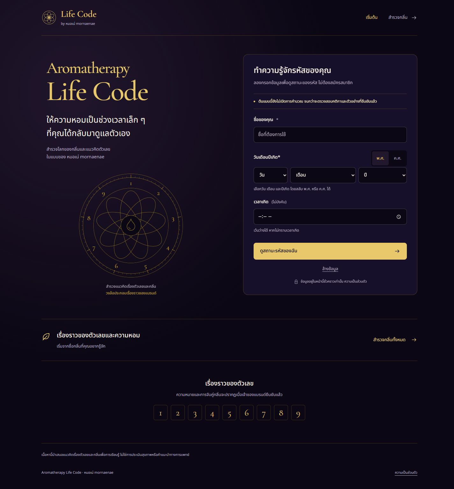
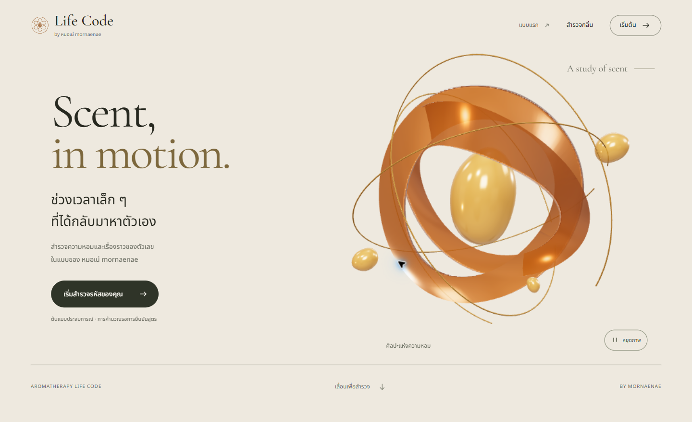
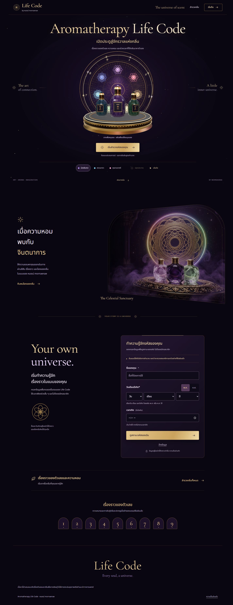

The Amber Atelier
ครีม–อำพัน สไตล์เรียบหรู
ริบบิ้นและหยดอำพัน 3D
ดูจากภาพที่บันทึกไว้ได้ครบหน้า โค้ดเว็บรุ่นนี้ถูกปรับต่อเป็นเวอร์ชัน 3 แล้ว

The Celestial Sanctuary
แฟนตาซีม่วงดำ–ทองตามโปสเตอร์
วงแหวน ขวดแก้ว และแสงที่ปรับได้